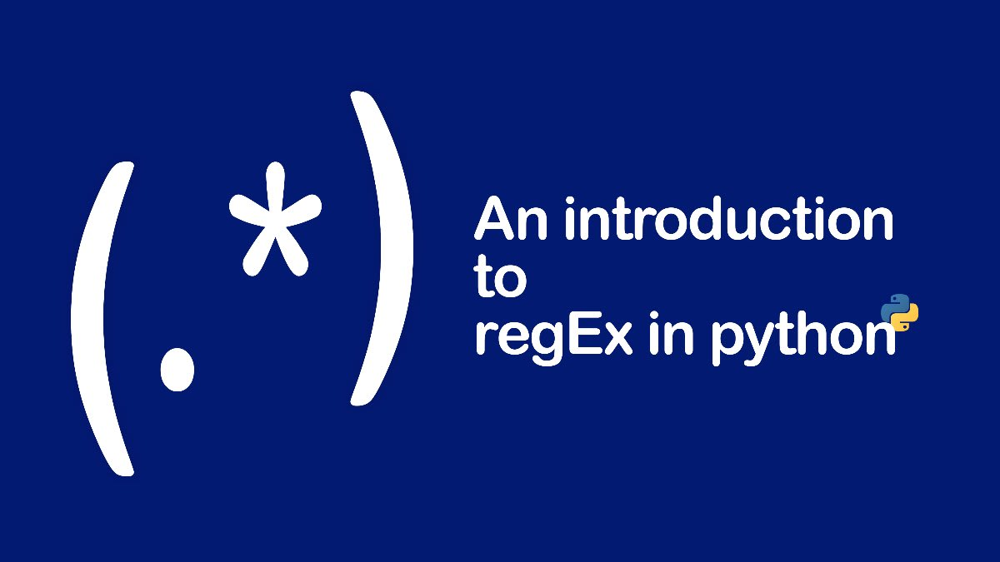

正则表达式主要用于数据清洗，比如从脏乱差的文本中抽取出自己需要的信息。常见于爬虫和文本分析。
一、正则表达式中的符号
按照符号的功能，我将其分为三类，一般情况下表达式都是由这三种符号组成的。
1.1 正则字符
预警，听不懂看不懂，都不要紧的。不要绞尽脑汁，本节后面会柳暗花明的。
| 正则符号 | 描述 | 匹配自己时 |
|---|---|---|
\ |
转义字符。例如， 'n' 匹配字符 'n'。 | '\n' |
( ) |
标记一个子表达式的开始和结束位置。 | \( \) |
| . | 匹配除换行符 \n 之外的任何单字符。 |
\. |
| | | |左右两侧均可参与匹配 | |
| \d | 匹配字符串中的单个数字 | |
| a-zA-Z | 匹配全部英文字符 | |
| 0-9 | 匹配全部数字 | |
\s |
匹配字符串中的\n,\t,空格 |
|
[] |
中括号内任意正则符号均可参与匹配 | \[ \] |
| ^ | 当在方括号表达式中使用，^对其后的正则表达式进行了反义表达。 | \^ |
1.2 限定字符
提前预警，听不懂不要绞尽脑汁，本节后面会柳暗花明的
| 正则符号 | 描述 | 匹配自己时 |
|---|---|---|
| * | 匹配前面的子表达式零次或多次。 | \* |
| ? | 匹配前面的子表达式零次或一次 | \? |
| + | 匹配前面的子表达式一次或多次。 | \+ |
| {m} | n 是一个非负整数。匹配确定的 m 次。 | |
| {m,} | m 是一个非负整数。至少匹配m 次。 | |
| {m, n} | m 和 n 均为非负整数，其中m <= n。最少匹配 m 次且最多匹配 n 次。 |
1.3 定位字符
预警，听不懂不要绞尽脑汁，本节后面会柳暗花明的
| 正则符号 | 描述 | 匹配自己时 |
|---|---|---|
| ^ | 匹配输入字符串的开始位置。 | \^ |
| $ | 匹配输入字符串的结尾位置 | \$ |
| \b | 匹配一个单词边界，即字与空格间的位置 | |
| \B | 非单词边界匹配 |
二、re库常用方法
至暗时刻已过，光明即将到来
| re库常用函数 | 作用 |
|---|---|
re.findall(pattern, string) |
根据pattern返回匹配结果（列表） |
|re.split(pattern, string) |使用pattern分割string，返回列表
|re.sub(pattern, repl, string)|使用repl替换string中的pattern|
三、只需要掌握
万能的百度谷歌+你的尝试，比什么都强大
- 搜索引擎检索到自己需要的正则表达式
- 最简单最好用表达式
(.*?) - 在正则表达式测试网站验证自己的正则表达式
3.1 检索找到自己需要的正则表达式
比如我只需要中文，其余字符统统不要。
我会在百度搜中文正则表达式
发现很多网页中网友提到[\u4e00-\u9fa5]，于是
import re
pattern = '[\u4e00-\u9fa5]+'
string = """Python是一门面向对象的编程语言，诞生于1991年。\
目前以广泛应用在网站开发、游戏软件开发、数据采集、机器学习等多个领域。\
一般情况下Python是Java的20%，所以说人生苦短，我用Python。"""
chinese_words = re.findall(pattern, string)
chinese_text = ''.join(chinese_words)
chinese_text
'是一门面向对象的编程语言诞生于年目前以广泛应用在网站开发游戏软件开发数据采集机器学习等多个领域一般情况下是的所以说人生苦短我用'
3.2 最简单最好用表达式(.*?)
(.*?)特别好用，ta的暗号及使用口诀一定要背过
pattern设计步骤：
正则符号组成正则表达式，用于匹配需要的字符。
- 找到重复的一致的规律
- 复制粘贴到pattern中
- 扣掉想要的数据
- 替换为
(.*?)或者相应的正则符号表达式*
比如现在需要快速挖掘出intros中的姓名、籍贯和年龄
import re
pattern = '我叫(.*?)，来自(.*?)，今年(.*?)岁。'
intros = ['我叫张三，来自山东，今年25岁。',
'我叫李四，来自河北，今年28岁。',
'我叫王五，来自河南，今年24岁。']
for intro in intros:
info = re.findall(pattern, intro)
print(info)
[('张三', '山东', '25')]
[('李四', '河北', '28')]
[('王五', '河南', '24')]
特别需要注意的是pattern中的(.*?)左右两侧必须有字符，否则匹配失败。
import re
pattern = '(.*?)，来自(.*?)，今年(.*?)'
intros = ['我叫张三，来自山东，今年25岁。',
'我叫李四，来自河北，今年28岁。',
'我叫王五，来自河南，今年24岁。']
for intro in intros:
info = re.findall(pattern, intro)
print(info)
[('我叫张三', '山东', '')]
[('我叫李四', '河北', '')]
[('我叫王五', '河南', '')]
由于
'(.*?)，来自(.*?)，今年(.*?)'
中最左侧和最右侧的(.*?)没有被其他字符左右包裹，导致匹配姓名和年龄失败。
import re
pattern = '叫(.*?)，来自(.*?)，今年(.*?)岁'
intros = ['我叫张三，来自山东，今年25岁。',
'我叫李四，来自河北，今年28岁。',
'我叫王五，来自河南，今年24岁。']
for intro in intros:
info = re.findall(pattern, intro)
print(info)
[('张三', '山东', '25')]
[('李四', '河北', '28')]
[('王五', '河南', '24')]
四、案例
4.1 找出文本中出现的年份
import re
pattern = '\d{4}'
string = """Python是一门面向对象的编程语言，诞生于1991年。\
目前以广泛应用在网站开发、游戏软件开发、数据采集、机器学习等多个领域。\
一般情况下Python是Java的20%，所以说人生苦短，我用Python。"""
re.findall(pattern, string)
['1991']
4.2 re.split(pattern, string)
断句
pattern = '；|。'
string = """Python是一门面向对象的编程语言，诞生于1991年；\
目前以广泛应用在网站开发、游戏软件开发、数据采集、机器学习等多个领域。\
一般情况下Python是Java的20%，所以说人生苦短，我用Python。"""
res = re.split(pattern, string)
res = [r for r in res if r]
res
['Python是一门面向对象的编程语言，诞生于1991年',
'目前以广泛应用在网站开发、游戏软件开发、数据采集、机器学习等多个领域',
'一般情况下Python是Java的20%，所以说人生苦短，我用Python']
4.3 re.sub(pattern, repl, string)
将数字替换为NUM
pattern = '\d+'
repl = 'NUM'
string = """Python是一门面向对象的编程语言，诞生于1991年。\
一般情况下Python是Java的20%，所以说人生苦短，我用Python。"""
re.sub(pattern, repl, string)
'Python是一门面向对象的编程语言，诞生于NUM年。一般情况下Python是Java的NUM%，所以说人生苦短，我用Python。'
4.4 . 统一表达
将指代同一个主体的不同表达词语统一为同一个词
text = '中国铁路工程集团有限公司成立于1950年3月，总部位于北京。目前中国中铁已经发展成中国和亚洲最大的多功能综合型建设集团。'
pattern = '中国铁路工程集团有限公司|中国中铁'
repl = '中铁'
re.sub(pattern, repl, text)
'中铁成立于1950年3月，总部位于北京。目前中铁已经发展成中国和亚洲最大的多功能综合型建设集团。'
text = '中国铁路工程集团有限公司成立于1950年3月，总部位于北京。目前中国中铁已经发展成中国和亚洲最大的多功能综合型建设集团。'
pattern = '[中国铁路工程集团有限公司|中国中铁]+'
repl = '中铁'
re.sub(pattern, repl, text)
'中铁成立于1950年3月，总部位于北京。目前中铁已经发展成中铁和亚洲最大的多功能综合型建设中铁。'
4.5 分割文本数据的章节
一二三四五六七八九十零百
text = """ 第一篇 Python简介 第二篇 Python入门语法 第三篇 Python网络爬虫 第四篇 文本数据编码 第五篇 数据分析 第六篇 可视化"""
pattern = '第[一二三四五六七八九十零百]+篇'
res = re.split(pattern, text)
res = [r.replace(' ', '') for r in res if ' '!=r]
res
['Python简介', 'Python入门语法', 'Python网络爬虫', '文本数据编码', '数据分析', '可视化']
4.6 抽取出数字
比如日期数据
text = '中国铁路工程集团有限公司成立于1950年3月，总部位于北京。目前中国中铁已经发展成中国和亚洲最大的多功能综合型建设集团。'
pattern = '\d+'
'-'.join(re.findall(pattern, text))
'1950-3'